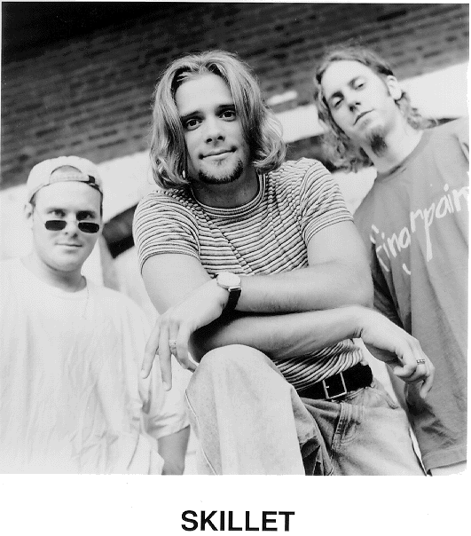
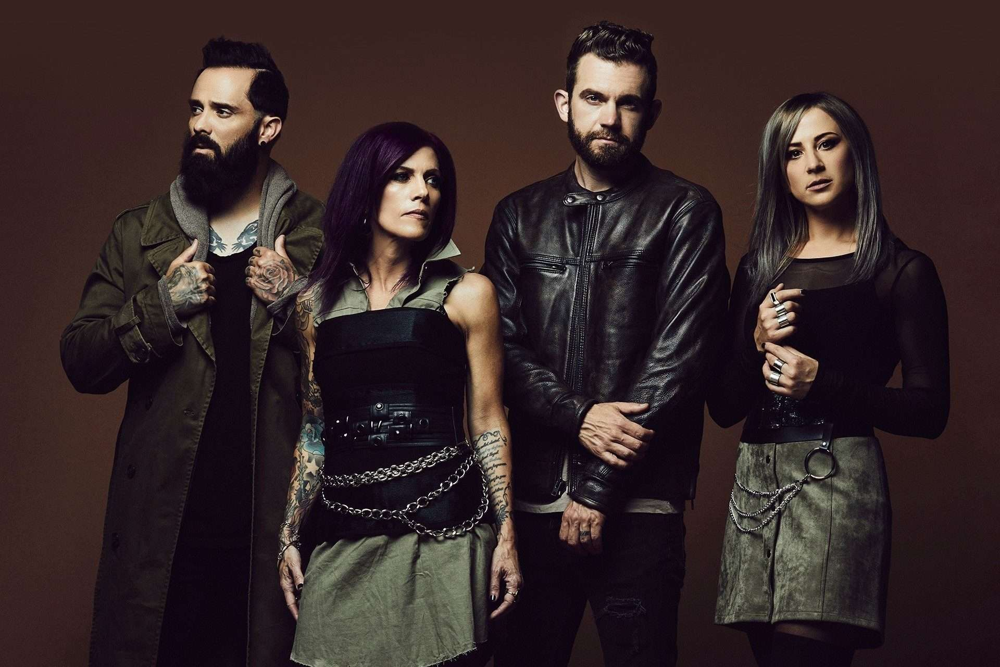

Inicios
Skillet es una banda formada en tennessee en el año 1996, se formo por 3 integrantes principales, John Cooper en el teclado principal, voz y bajo, Ken Steorts en la guitarra y Trey McClurkin en la bateria. Despues de un mes juntos la disquera ForeFrontRecords mostro interes en ellos y poco despues lanzaron su primer album.
Durante 1997, Skillet compaginó su gira de presentación con la preparación del siguiente álbum, titulado Hey You, I Love Your Soul, lanzado en abril de 1998. Pronto se uniría a la formación Korey Cooper, la esposa de John, para tocar los teclados. Poco antes de que la banda comenzara la grabación de su tercer álbum, Steorts dejó la banda y fue sustituido por Kevin Haaland. Después del lanzamiento de Invincible, Trey McClurkin dejó la banda y fue reemplazado por la baterista Lori Peters.
2000's
Con poco tiempo entre giras, Skillet grabó su quinto álbum, Alien Youth, y fue lanzado el 28 de agosto del 2001. Antes de su lanzamiento, Haaland dejó la banda y Ben Kasica se hizo cargo de la guitarra.
En 2003, Collide fue lanzado por Ardent Records. A partir de este año Korey asume la guitarra rítmica. Collide llamó la atención de Lava Records, una división de Atlantic Records, compañía que luego compraría sus derechos y lo relanzó con una canción adicional, "Open Wounds". En el 2005 el álbum recibió una nominación al Grammy.
álbum Comatose fue lanzado el 3 de octubre de 2006 debutando en el puesto número 55 en el Billboard 200 y número 4 en la lista de música cristiana En enero de 2008, Lori Peters se retiró de la banda y se dedicó a entrenar a su reemplazo, Jen Ledger En octubre la banda lanzó un CD/DVD llamado Comatose Comes Alive
Skillet entró al estudio para grabar con el productor nominado al Grammy Howard Benson. El álbum, titulado Awake, fue lanzado el 25 de agosto de 2009. Se ubicó en el puesto #2 en el Billboard Top 200, vendiendo más de 100.000 unidades en su primera semana. Skillet obtuvo tres Premios Billboard y fue nominado a seis para la 41ª entrega de Dove Awards. Comatose fue certificado Oro por RIAA el 3 de noviembre.

2010's
El 14 de febrero del 2011 Skillet anunció que Ben Kasica deja la banda, y, a partir del 16 de abril, Seth Morrison lo sustituye.
John Cooper dijo a RadioU que la banda se dirigiría al estudio en octubre del 2012 para grabar con Howard Benson. El 12 de diciembre, Awake fue certificado disco de platino por RIAA. Cooper anunció que el nuevo álbum es titulado Rise, el cual, lanzado el 25 de junio del 2013, debutó en el puesto #4 del Billboard 200, vendiendo 90.000 copias en su primera semana. Skillet tocó "Rise" el 11 de julio en Conan. La banda ganó un Dove Award por "Sick of It." En el 2014 recibieron dos nominaciones en los Premios Billboard y ganaron dos en los Dove Awards.
El 12 de julio del 2016 la RIAA anunció que Rise ha sido honrado con la certificación de oro. El 5 de agosto la banda lanzó su noveno álbum, titulado Unleashed, el cual en su primera semana vendió 80.000 copias en los Estados Unidos, ocupando el puesto #3 del Billboard Top 200.
La banda obtuvo tres nominaciones en los Premios Billboard y tres en los Dove Awards del 2017 El 17 de noviembre el grupo lanzó Unleashed Beyond, la edición de lujo del álbum. Jen Ledger inició su proyecto como solista, lanzando un EP titulado LEDGER el 12 de abril de 2018. Skillet recibió dos nominaciones en los Dove Awards 2018, de las cuales ganó una. En septiembre, John Cooper anunció su nueva banda, Fight the Fury, la cual lanzó un EP titulado Still Breathing el 26 de octubre. El 4 de diciembre Unleashed fue certificado Oro.
El 7 de mayo de 2019, Skillet lanzó "Legendary" como el primer sencillo de su décimo álbum, Victorious. El 14 de junio, la banda lanzó dos canciones: "Save Me" y "Anchor". El 27 de julio lanzaron "You Ain't Ready" El álbum fue lanzado vía Atlantic Records el 2 de agosto. El 23 de septiembre, WWE reveló que "Legendary" será el tema musical para las siguientes temporadas de RAW
2020-Actualidad
En diciembre del 2020, John Cooper lanzó su primer libro, Awake & Alive to Truth: Finding Truth in the Chaos of a Relativistic World.
El 15 de septiembre del 2021, Skillet lanzó "Surviving the Game", el primer sencillo de su undécimo álbum de estudio, Dominion, el cual fue lanzado el 14 de enero de 2022.